A video series Wagtail and Django
Wagtail Unboxed
Build a real Wagtail site from an empty folder — and understand every file in it. We open a brand new Wagtail project, read all 29 files it generates, then build a working client site: pages, StreamField, images, a blog, snippets, navigation, a contact form, search, and a live deployment.
— 15 episodes published so far, new ones every Tuesday
-
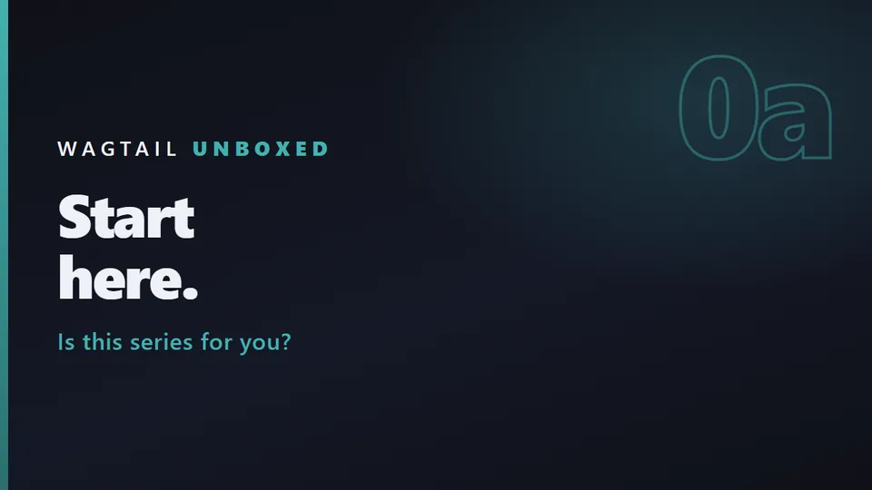
5:21 Episode 0a What this series is, and who it is for The honest version of “is this series for you?” — what Wagtail is, who it is for, what you need to know first, and exactly what we are building. -
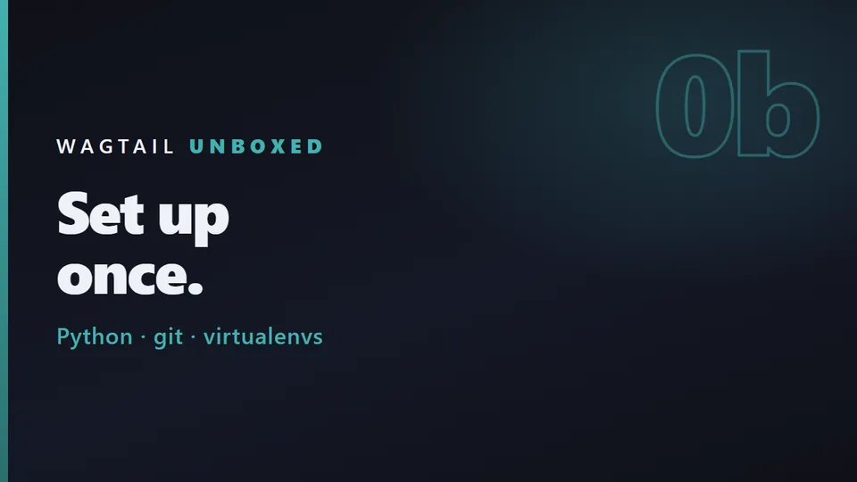
4:48 Episode 0b Setting up your machine Short, skippable, and it shows the failure modes rather than only the happy path. Already have Python 3.12, git and a virtualenv habit? Skip to episode 1. -
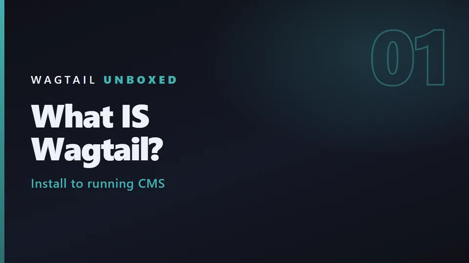
5:19 Episode 01 What Wagtail actually is We install Wagtail, create a project, and get a real CMS admin running — then stop, because episode 2 opens up every single file it generated. -
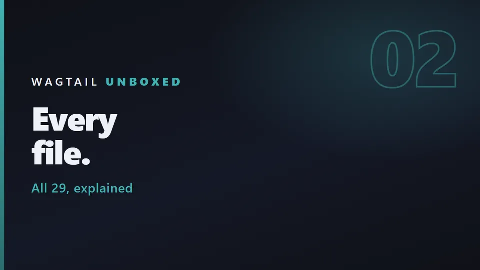
7:51 Episode 02 Opening the box: every file explained The wagtail start command generates 29 files. Most tutorials explain three of them. We read all of them, because the ones you are told to ignore decide how your site behaves. -
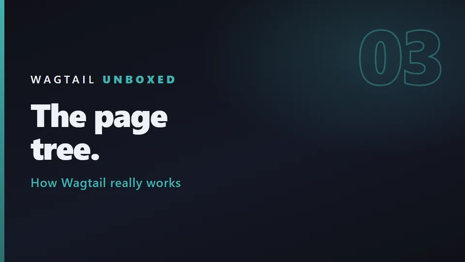
5:08 Episode 03 The page model and the tree We finally change code: two fields on the homepage, a second page type, and the one migration line that explains how every Wagtail page is stored. -
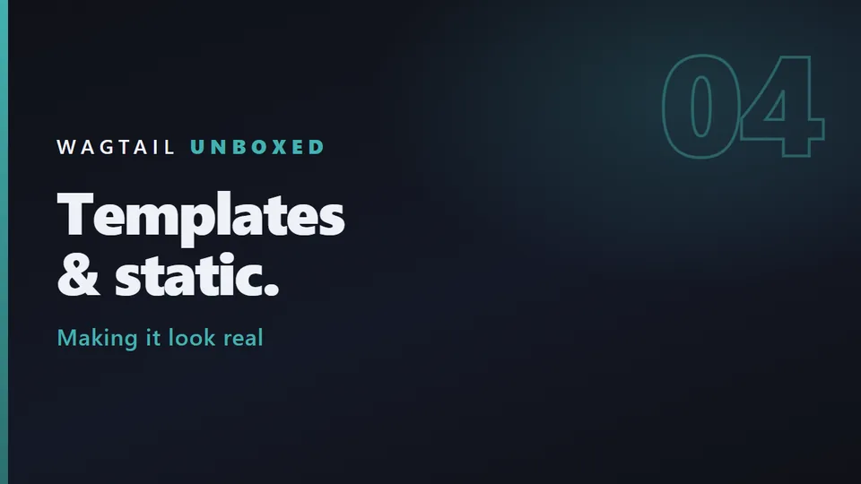
5:38 Episode 04 Templates and static files The teal egg finally goes. We delete Wagtail's welcome page, write a real base template, list child pages from the page tree, and style the site with plain CSS. -
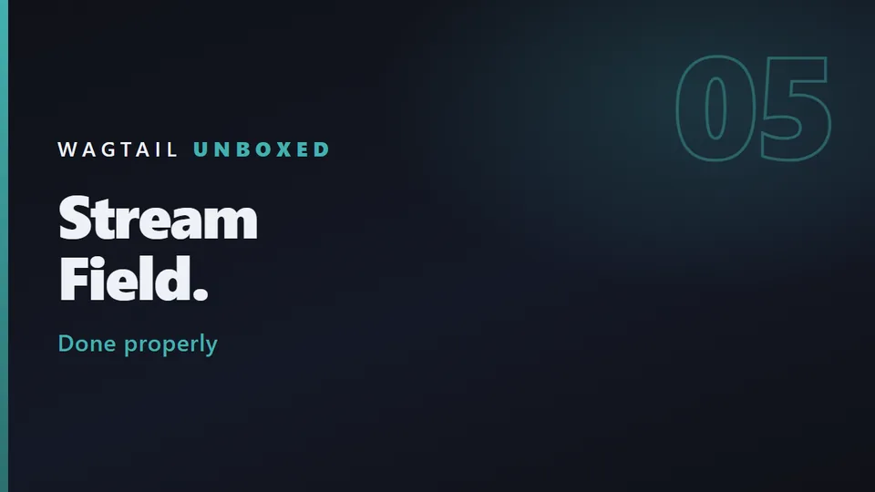
7:56 Episode 05 StreamField, properly We replace the rich-text blob with real content blocks — and hit the migration error that stops most people on their first try. -
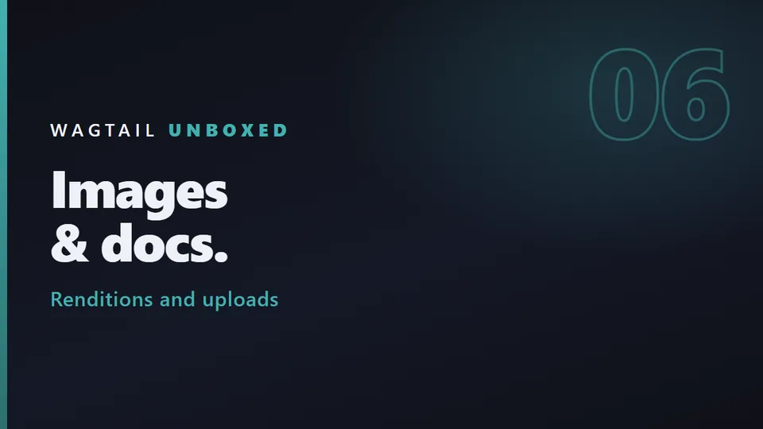
7:49 Episode 06 Images and documents Six episodes into a design studio's website and there is not one picture on it. We fix that — and hit the image bug that only shows up after you deploy. - 5:25 Episode 07 A blog: parent and child pages The studio site gets a journal: an index page, posts under it, newest first, three at a time. Our first app of our own.
-
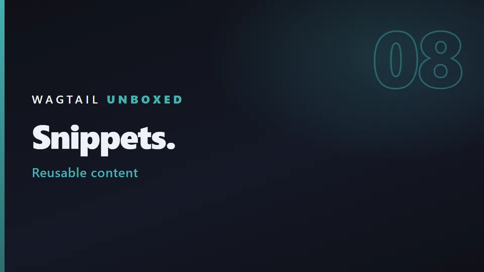
4:37 Episode 08 Snippets and reusable content Content that isn't a page: a team member, a testimonial. No URL, no place in the tree, but they belong on several pages. That is a snippet. Plus tags for the journal. -
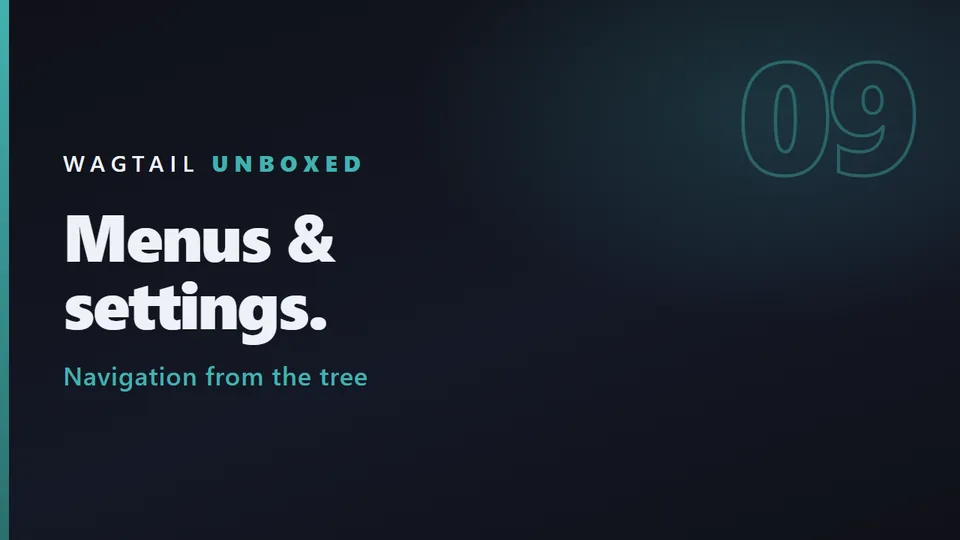
4:17 Episode 09 Navigation and site settings The studio site gets a real menu and a footer the client can edit. No menu model, no hard-coded links: the menu is built from the page tree, and the contact details come from Wagtail's site settings. -
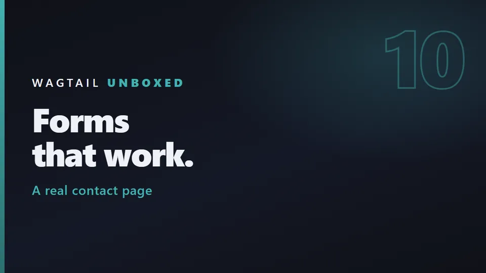
4:05 Episode 10 Forms that work A contact form the editor builds field by field, that emails the studio and stores every submission. And the three things Wagtail's defaults get wrong, every one measured. -
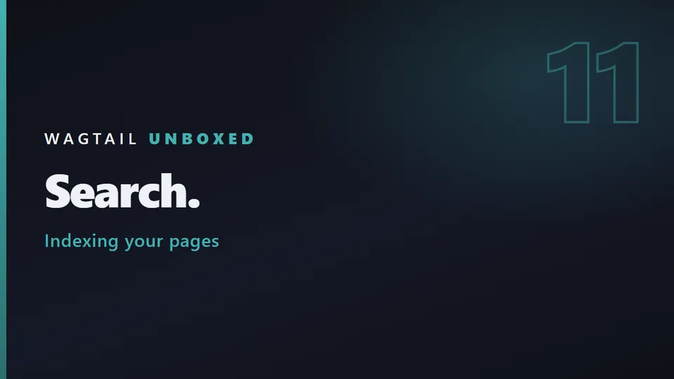
3:50 Episode 11 Search The search app we unboxed in episode 2 finally does something. It works out of the box, and this episode finds four ways it doesn't work well, every one measured. -
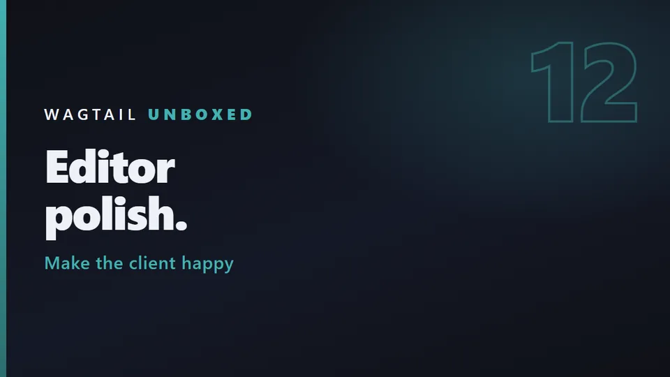
4:26 Episode 12 Editor experience polish Act 3 starts by logging in as the client. Every episode so far we've been a superuser. The client isn't — and in Wagtail's default Editors group, they can't open the team, the testimonials or the footer settings we built for them. -
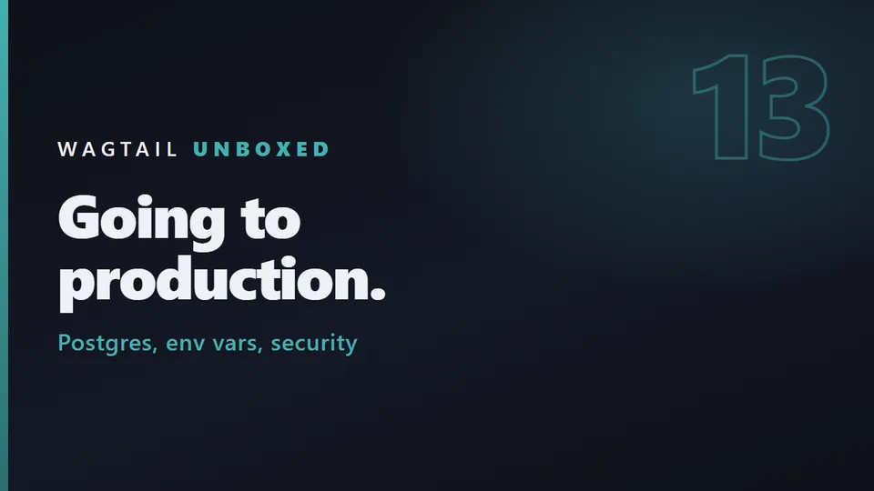
6:06 Episode 13 Production settings Getting the studio site ready for production, and five things the generated project gets wrong, every one measured with DEBUG off.
Before you start: You need basic Django — models, migrations, templates, settings.py. Not deeply, but Wagtail is Django, so this series teaches Wagtail, not Django. New to Django? Do the official Django tutorial first, about a weekend of work, then come back.
What makes this different
Most tutorials tell you to ignore the files Wagtail generates. We read them, including the data migration that quietly creates your homepage, and what 00010001 in your database actually means. The goal is that you can modify this code, not just copy it.
The series
- Act 1 — Unboxing (episodes 1–3): install, create, and read every generated file.
- Act 2 — Building (episodes 4–11): templates, StreamField, images, blog, snippets, navigation, forms, search.
- Act 3 — Shipping (episodes 12–14): editor polish, production settings, deploy.
Not covered, on purpose: no React, no Tailwind, no Node, no Docker deep-dive. Plain CSS written by hand, so the episodes stay about Wagtail.
The code
Every episode ends on a git tag, so you can start anywhere: the repository is on GitHub. Versions on screen are Wagtail 7.4.3 · Django 6.1.1 · Python 3.12.